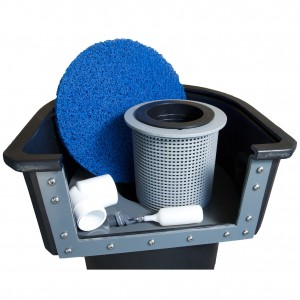

Skimmers
Pond skimmers are an important element in most ponds. It is a type or filtering device that pulls water into its opening and strains out large debris. This prevents the debris from settling on the bottom of the pond. The pond skimmer relies on a pump to operate. The pump can either be a submersible, placed inside the skimmer, or an external pump that is plumbed outside of the pond. There are many different skimmer options available from small add on skimmers, such as the No Niche Skimmer, or a larger unit, like Savio or Aquascape. My personal favorite is the Helix Skimmer. Most pond skimmers are equipped with a basket or a net that collects the large debris, like leaves and twigs, and a filter pad of some sort that collects the smaller and finer debris, like dead algae.
Most skimmers are designed to be installed for a newly constructed pond and placed outside the perimeter of the pond. The liner is connected to the skimmer through a face-plate, which sandwiches the pond liner creating a water tight seal. The liner is then cut and the opening to the skimmer is free and clear. A pond skimmer should be sized for you pond, taking into account water volume and surface area. In some large ponds multiple skimmers may be necessary to keep up with the debris that may fall into the pond.
A skimmer should be placed on the opposite side of the pond from the waterfall. Doing so will help create a "surface current" which will allow the debris to make its way into the skimmer basket. I have seen many ponds where the skimmer is too close to the waterfall or the skimmer opening is pointing away from the waterfall’s current. This is not the ideal set up because the debris (leaves) will more than likely become waterlogged before making it to the skimmer and will sink to the bottom of the pond. If the skimmer is placed too close to the waterfall, the “other end” of the pond will have little or no surface current allowing debris to build up and settle.
Most skimmers should be cleaned out weekly by removing the build up of leaves, preventing them from decomposing and releasing their nutrients into the pond. These nutrients will eventually become food for algae and/or a bed for parasites. The Helix Skimmer, (pictured here), is equipped with a large debris basket that can easily be removed and cleaned. You can see the suction on the water’s surface which easily draws in any floating leaves and other debris.
Some skimmers have a basker or a mesh bag which collects the leaves and debris which can be removed and emptied. Most skimmers can be equipped with an auto fil device wich will keep the ponds water at the desired level.